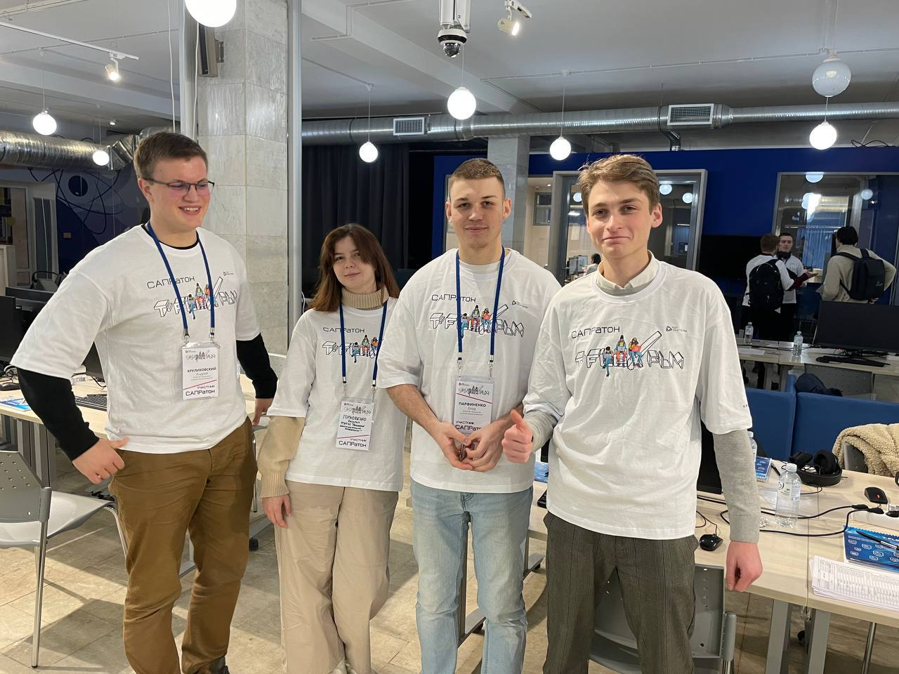
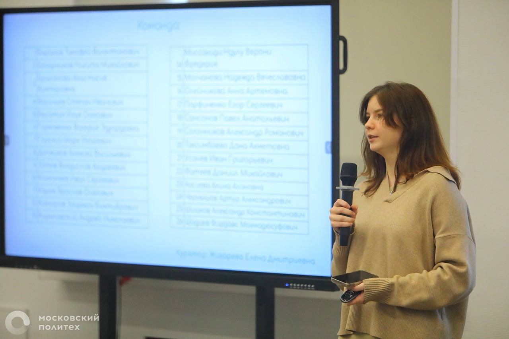
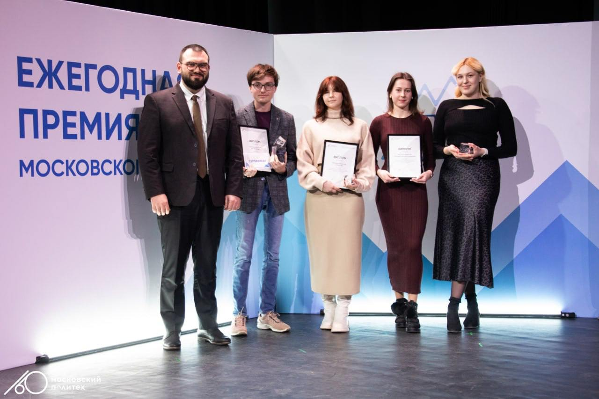
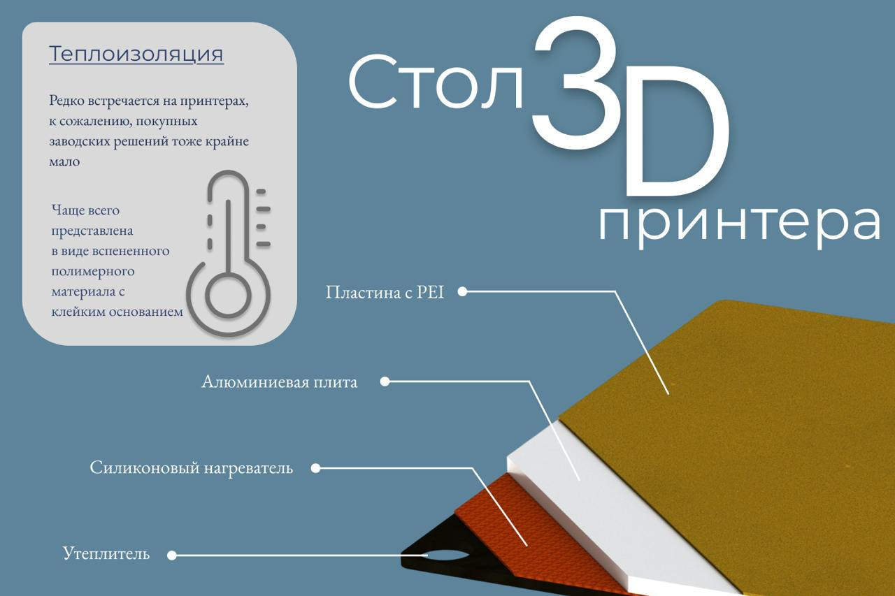
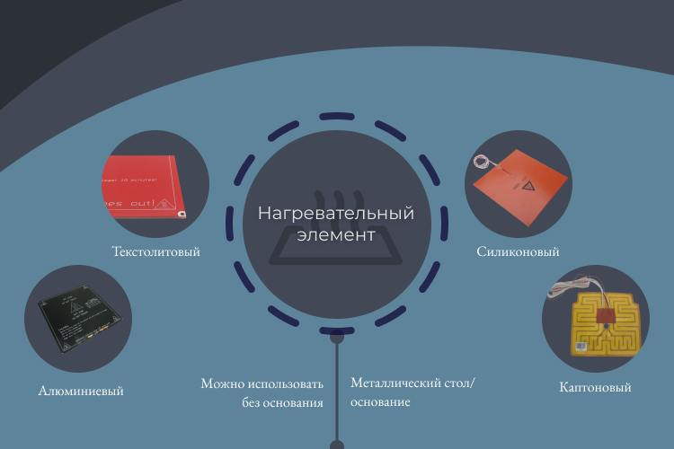

Мы приняли участие в САПРАТОНЕ! 🚀
🗓 30 ноября команды Московского Политеха, в том числе участники проекта СОФТ 3D приняли участие в очном соревновании учащихся по 3D-моделированию — САПРАТОНЕ. В рамках хакатона участники решали инженерные задачи с помощью программного комплекса T‑FLEX PLM за ограниченное время. Наши команды заняли 3, 4 и 5 места🏅
🦾 Соревнование стало прекрасной площадкой для обмена опытом, раскрытия инженерных талантов и демонстрации навыков работы с современными технологиями. Мы не только справились с задачами, но и получили ценный опыт командной работы.
🔥 Участие в таких мероприятиях мотивирует нас на дальнейшее развитие, поиск новых вызовов и совершенствование профессиональных навыков. С нетерпением ждем новых проектов и встреч!

🛡 Защита проекта «СОФТ 3Д» в Московском политехе
🌇 На прошедшей открытой защите проектов в Московском политехническом университете наша команда представила разработку «СОФТ 3Д» — 3D-принтер для работы с эластичными материалами. Этот проект стал результатом многомесячной работы в рамках дисциплины «Проектная деятельность» и был удостоен внимания экспертов и индустриальных партнеров
🧑💻 Проектная защита позволила нам продемонстрировать не только промежуточные результаты, но и наш подход к решению инженерных задач. Мы представили ключевые особенности и преимущества нашего устройства, поделились планами по его развитию и получили ценные рекомендации от профессионалов
🔝 Важной частью защиты стала возможность продемострировать проект и получить обратную связь. Мы гордимся тем, что наш проект стал частью этой большой истории! 🚀

🎉 Наша команда стала лауреатом! 🎉
Начался новый семестр и у нас хорошая новость! 24 января в Московском Политехе прошла премия «ПИК», в которой наша команда СОФТ 3D была награждена в номинации «Научный коллектив» 🏆
Для нас это приятное достижение, которое стало возможным благодаря слаженной работе всей команды. 📈
Спасибо всем, кто поддерживает нас на этом пути! В новом семестре нас ждет еще много интересной работы над проектом! 🚀

Любая 3D-печать начинается с первого слоя. А первый слой — с рабочего стола
Есть негласное правило: всегда дожидаться окончания печати первого слоя. Если он плохо прилипнет или получится неравномерным, модель может оторваться, а с ней — улетят время, пластик и моральные силы
Как выбрать рабочий стол?
- 🔹 Металл, стекло, полимерные покрытия — от материала зависит адгезия пластика
- 🔹 Раньше для улучшения прилипания использовали скотч, клей-карандаш, лак для волос и даже пиво
- 🔹 Сегодня на смену пришли металлические пластины на магнитной подложке с PEI-напылением — PLA, ABS, PETG, TPU держатся отлично!
🔥 Какой стол в нашем 3D-принтере?
Мы заказали фрезерованный алюминиевый стол 8 мм. Почему?
- ✔️ После проката алюминиевый лист может иметь перепады ±0.2 мм, что критично для первого слоя. Фрезеровка устраняет неровности
- ✔️ Толщина 8 мм снижает деформацию при нагреве
- ✔️ Сверху — PEI-пластина: идеальна для TPU, с которым мы работаем


.jpg)